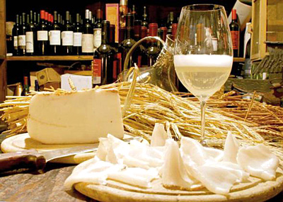
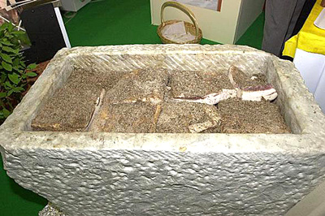
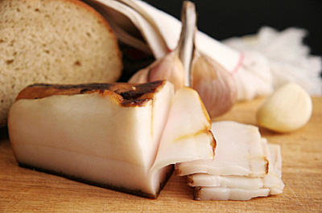
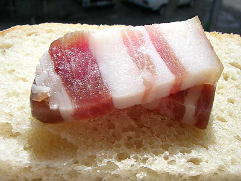
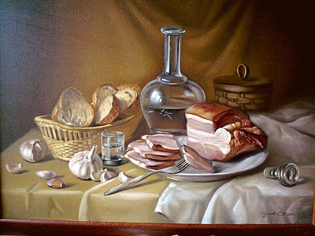

Сало… У одних людей при виде или упоминании этого продукта по телу пробегают мурашки ужаса, а у других начинается обильное слюноотделение. Сало – продукт спорный со своими плюсами и минусами, Его можно либо не терпеть, либо любить, только не оставаться равнодушным.
Праславянская
форма sadlo. Корень sad- - тот же, что и в слове «садиться». Суффикс
-dl-; d закономерно выпало в древнерусском, но сохраняется в
западнославянских языках (например, словацк. sadlo). «То, что садится на
мясо».
Известно с VII века в форме «сало», встречается в древнеармянском описании хазарской трапезы (заимствование). Одно из свидетельств в пользу обособления в это время древнерусского языка от праславянского.
И все-таки родиной сала правильнее считать Италию. Именно там три тысячи лет назад появилась идея использовать свиной жир как дешевую и калорийную пищу для рабов, трудившихся на мраморных каменоломнях.
Сало было всегда продуктом питания бедных людей, ибо лучшие куски свиной туши доставались, тем кто, мог за них заплатить или отнять. Вот и научились бедняки заготовлять сало впрок путем засолки, иногда копчения, и дальнейшего вызревания. Практически каждый народ будет утверждать, что именно их сало – лучшее в мире. Русские и украинцы, будут за свое «сало», белорусы за своё «сала», немцы за «шпек», балканские славяне за «сланину», поляки за «слонину», американцы за «фэтбэк», и т.д. Но если, кто когда-нибудь пробовал «Lardo di Colonnata» или « Valle dAosta Lardo dArnad» вряд ли посмеет оспаривать превосходство двух последних.
«Lardo di Colonnata» происходит из маленького горного городка, если не сказать деревни, Колонната , расположенного рядом со знаменитыми мраморными разработками Каррара, что в Апуанских Альпах северной Тосканы. Местные мужчины в основном занятые в каменоломнях, традиционно брали с собой на перекус Лардо, употребляя вместе с другими типичными для Италии продуктами – хлебом, оливками и помидорами. В настоящее время Лардо перестало быть едой бедняков, а превратилось в местную достопримечательность, затмившую славой даже каррарский мрамор. Да, своему существованию Колонната обязана мрамору, а своей известности – салу. Небольшой объем, почти подпольного производства (из-за постоянных «наездов» местной санитарной инспекции) не в состоянии удовлетворить возрастающий спрос на этот продукт, и вот на рынке уже появились подделки, которые имеют такое же отношение к оригиналу, как Боржом произведённый в Ессентуках к своему грузинскому конкуренту.
Лардо — продукт очень древний. Еще Император Юстиниан законодательно обязал поставлять Лардо в армию, чтобы легионеры имели достаточно энергии в походах и сражениях.
Оригинальность процесса приготовления Лардо основана, прежде всего, на использовании корыт, высеченных из местного каррарского мрамора. Как известно ваятели очень скрупулезно подходят к выбору камня, и, если обнаружится какой-либо изъян, они от него откажутся. Чтобы добро не пропадало, местные решили использовать забракованные мраморные глыбы, выдалбливая из них ванны или корыта для засолки и вызревания сала. Мрамор обладает уникальными свойствами для хранения продуктов. Он обеспечивает необходимые температуру и влажность и является естественным «консервантом», так как использование современных консервантов в Колоннате запрещено.
При приготовлении используется сало от свиней, поставляемых из Пармы и
Сан-Даниэле, известными своими ветчинами. Свиньи должны быть не моложе 9
месяцев и весить не менее 160 кг. Производители ветчины берут себе
своё, а сало отправляют в Колоннату.

Но обязательными являются черный перец, чеснок, розмарин, мускатный орех. Дополнительными – звездчатый анис, тимьян, душистый перец, шалфей, орегано, кориандр – в общем практически все известные специи. Различные пропорции и сочетания специй позволяют каждому производителю иметь свой «фирменный» семейный рецепт и разнообразие ароматов и вкусов. Когда ёмкость наполнена – она плотно закрывается, и сало отправляется на вызревание.
Кто-то относит емкость в винный погреб, кто-то в местные мраморные гроты и пещеры на срок до шести месяцев или даже до весны. В результате получается нежнейшее, тающее во рту, обволакивающее своими насыщенными ароматами сало, по сравнению с которым все другие сорта блекнут и меркнут.
Итальянцы могут гордиться и другим сортом сала – из Коммуны dArnad (
Valle dAosta Lard dArnad) что на северо-западе Италии, где принцип
приготовления почти такой же, как в Колоннате, только вместо мраморных
емкостей используют деревянные – из дуба, ореха, или каштана. Видимо, на
оригинальный вкус этого сала оказывают влияние танины и дубильные
вещества, содержащиеся в древесине. Так что, будете в Италии – особенно в
Тоскане, постарайтесь попробовать эти деликатесы – которые превратились
из еды легионеров и каменоломщиков в мировой шлягер.

Не прошло и тысячи лет, как сало признали и в Испании. Хамон – в переводе с испанского – ветчина, окорок. Хамон практически не содержит холестерина и с тех самых пор остается любимым мясным продуктом в Испании. Считается, что Колумб смог добраться до Америки благодаря тому, что среди припасов у него было много окороков и сала, которое может храниться до полугода, содержит много калорий, причем эти калории долгоиграющие – силы и энергия у поевшего сала (в меру!) восстанавливаются надолго, калорийность продукта составляет 770 ккал на 100 г.
А то на одной рыбе матросы бы у него озверели очень скоро... Так сало
внесло свой неоценимый вклад и в мировую историю – ведь не открыл бы
Колумб Америки, и не было бы у нас помидор, а без помидор не сварить
борща, а без борща – какая ж это вообще культура?!

Вот средневековый текст, переведенный Ги де Валу: «После того как монахи-повара вымыли руки и лицо и прочли три предписанные молитвы, они моют бобы в трех водах и затем ставят их вариться на огонь в котле с водой. Потом их перекладывают в другую посудину с плотно закрывающейся крышкой. Бобы приправляют свиным салом. Сало нужно добавлять не в процессе варки овощей, а в самом конце»... . «Роман о Лисе»: «Дома у него были в изобилии и жирные каплуны, и соленья, и ветчины, и сало. Все это добро защищал крепкий палисад из дубовых кольев и колючего кустарника...»
А знаменитая английская яичница с беконом? бекон – это вам что? Оно
самое. Англичане же – народ здравый, рассудительный и ученый, и о своем
здоровье заботятся хорошо. Позавтракав таким полезным и приятным
образом, англичане покоряли моря, развивали капитализм, изобретали
паровые машины и открывали теорию эволюции. Так что смело махнем рукой
на мифы о вреде сала, в нашем-то холодном климате оно в разумных
количествах совершенно необходимо. Я уж не буду говорить, что в
настоящий огнедышащий красный борщ обязательно нужны шкварки, иначе это
не борщ, а диетический макет борща, который дает об этом гордом блюде
чисто визуальное представление.

В традициях русской кулинарии использовать при жарке и топленое масло, и, конечно, сало, то есть, наши предки любили готовить, используя жирные кислоты, не подозревая при этом об атеросклерозе и канцерогенности. И судя по всему, с ними ничего страшного не происходило.
При этом неизвестные исследователи рекомендуют для оптимизации эффекта сала в отношении гиперхолестеринемии сочетать его с чесноком. Именно это и есть рецепт успеха. Проводя регулярную профилактику, любой желающий сможет оздоровить свои сосуды, сердце и печень. Печень, если вы не знали, значительно оздоравливается, если в рацион питания ежедневно включать сало.
Холестерин, кстати, отнюдь не чужеродное соединение для нашего
организма, где он выполняет массу важных функций: входит в состав
межклеточных мембран и тканей организма, где находится либо в свободном
состоянии, либо в виде соединений жирных кислот, участвует в синтезе
составных частей крови и т.д. Нормой считается от 150 до 240 мг в 100
куб.см. крови, до некоторой степени это условный показатель, отражающий
интенсивность процессов окисления жиров и углеводов в организме по мере
их поступления и синтеза. Что свиное сало является прекрасным
желчегонным средством.

Применение сала в качестве наружного средства имеет широкий спектр рекомендаций. Эта процедура показана при артралгиях, артозах, артритах любой этиологии, как средство реабилитации после операций и травм опорно-двигательного аппарата. Встречаются указания на выраженный положительный эффект сала при наружной терапии маститов и термических ожогов, поверхностных ран и отморожений. Поражает, что сало эффективно лечит пяточную шпору, снимает зубную боль и излечивает экзему. Достаточно только наружного регулярного применения.
Значительно дальше шагнули в применении сала украинские учёные. Собственно, никто и не удивляется, что в области применения этого лекарственного средства исследователи из Украины впереди планеты всей. Высказано предположение, что сало содержит стволовые клетки! А всем известно, какие перспективы открываются для применения стволовых клеток в медицине 21-го столетия. Неясно, зачем только человеку стволовые клетки свиньи? И как они могут усвоиться при энтеральном применении и какую пользу принесут? Оставим эти вопросы для специалистов-салологов.
Онкология не осталась без внимания. В сале растворяются канцерогены и вместе с ним выводятся из организма, поэтому в схемы лечения и профилактики онкозаболеваний необходимо ввести новый ингредиент — сало, конечно.
Сало содержит и множество других ценных жирных кислот, которые участвуют в строительстве клеток организма, а также играют большую роль образовании гормонов и холестериновом обмене. Они связывают и выводят из организма токсины. Причем, по содержанию этих кислот, сало опережает сливочное масло.
Именно в сале в оптимальном, хорошо усвояемом виде содержится селен. По данным института РАМН, 80% россиян испытывают дефицит этого вещества . А спортсменам, кормящим матерям, беременным и курильщикам этот микроэлемент просто жизненно необходим. Кстати, в чесноке, который часто употребляют вместе с салом, тоже содержится большое количество селена. Сало не портится при долгом хранении . В продолжительных походах оно всегда было одним из главных источников физических сил для путешественников.
Если съедать пару кусочков сала на голодный желудок, то можно быстро добиться ощущения сытости. Это не позволит вам переедать, и вы сможете сохранить хорошую фигуру. В настоящее время, даже появились диеты для похудения, основанные на умеренном потреблении сала.
Редко какое застолье обходиться без сала. Что и говорить, прекрасная закуска под водочку, самогон или горилочку. Да и быстрому опьянению сало не способствовало. Так что учтите это, и перед возлияниями съешьте кусочек сала. Это может спасти от тяжелого похмелья. Происходит это потому, что жирное сало обволакивает желудок и не дает напитку с градусами быстро усвоиться. Алкоголь впитывается позже, постепенно, уже в кишечнике. Спиртное же, со своей стороны, помогает быстрее переварить жир и разложить его на компоненты.
МИФ 1: «ОТ САЛА ТОЛСТЕЮТ!».
Поправляются не от сала, а от его
количества! (Можно потолстеть и от наиполезнейшей овсянки, если есть ее
мешками). Если вы ведете обычный сидячий или около того образ жизни, вам
положено 10-30 г сала в день. Если уже страдаете ожирением и вам
предписана низкокалорийная диета – не более 10 г в день. Отличайте
«истинное» сало - подкожный жир, прямо со шкуркой – от схожих продуктов.
Бекон, шейка и т.п. - не подкожный, а внутримышечный жир. К тому же
вместе с белком, то есть мясом, и такая смесь уже не ахти что хорошее.
Самое
полезное сало – просто соленое, с чесноком или перцем. Хорошо и
копченое, но только «домашним способом», с дымком. На мясокомбинатах
сало, грудинку и прочие свиные прелести коптят в жидкости, и это не
комильфо, свойства продукта меняются не в лучшую сторону.
МИФ 2: «САЛО – ТЯЖЕЛАЯ ПИЩА…».
Не совсем так. У здорового человека
с нормальным желудком настоящее свиное сало очень хорошо усваивается и
не перегружает печень. Вообще самые ценные для нас жиры – с это те,
которые плавятся при температуре нашего тела, т.е. около 370. Они полнее
и быстрее всех остальных перевариваются и всасываются. Их список как
раз и возглавляет свиное сало. Но, конечно, сало, как всякий жир,
требует для своего переваривания желчи и липаз (специальных веществ в
желудке и кишечнике). Поэтому при нарушениях выработки желчи и омыления
жиров врачи и не рекомендуют его есть.
МИФ 3: «В САЛЕ СПЛОШНОЙ ЖИР».
И прекрасно! Потому что это
великолепная структура - подкожный жир, в котором сохранились клетки и
биологически активные вещества. Например, самая ценная из жирных кислот -
полиненасыщенная арахидоновая кислота. Она встречается очень редко, в
растительных маслах ее вообще нет. Прожить же без нее никак нельзя.
Арахидоновая кислота входит в состав всех клеточных мембран и нужна
сердечной мышце. К тому же без нее никак не обходятся гормоны, иммунные
реакции и холестериновый обмен. Есть здесь и другие незаменимые жирные
кислоты (их называют витамином F) – линолевая, линоленовая,
пальмитиновая, олеиновая. По их содержанию, кстати, сало приближается к
растительным маслам. Не забудьте про жирорастворимые витамины А (его
здесь до 1,5 мг на 100 г), Д, Е, а также каротин. В итоге биологическая
активность сала в 5 раз выше, чем у масла. Так что зимой «свиной
продукт» - как раз то, что надо для поддержания жизненного тонуса и
иммунитета.
МИФ 4: «ЭТОТ СТРАШНЫЙ ХОЛЕСТЕРИН».
Да, он здесь присутствует, но
даже меньше, чем в коровьем масле. И ничего страшного в нем нет.
Думаете, немедленно начнет откладываться на стенках артерий и начнется
атеросклероз? Ничего подобного! Врачи давно установили, что количество
холестерина в крови и тканях мало зависит от того, сколько вы его съели.
Это вещество прекрасно синтезируется, даже если вы вообще его не едите.
Поэтому куда важнее холестериновый обмен: что организм получит, сколько
сделает и как использует. Между прочим, арахидоновая, линолевая и
линолевая жирные кислоты как раз и «чистят» сосуды от отложений. Так что
небольшой кусочек сала с витамином F - только на пользу в деле
профилактики атеросклероза. А имеющийся в нем холестерин пойдет,
например, на создание иммунных клеток (лимфоцитов и макрофагов),
спасающих организм от вирусов и прочих врагов-патогенов. Даже интеллект
без холестерина никуда – в головном мозге его больше 2%.
МИФ 5: «ЗДОРОВЫЙ ЖИР - ТОЛЬКО РАСТИТЕЛЬНЫЙ ЖИР».
Увы, неправда. В
штате Массачусетс связь между здоровьем и жирами в еде начали
исследовать еще в первой половине XX века и продолжают это делать до сих
пор. Так вот, самые здоровые и физически активные люди – те, кто ест и
животные, и растительные жиры! На долю жиров должно приходиться примерно
30% калорий за день. (Обратите внимание: не съедать 30% жиров, а
получать от них 30% всей энергии.) Проще говоря - 60-80 г в день. И
среди них только треть – растительные жиры. Нам нужно 10%
полиненасыщенных жирных кислот, 30% насыщенных, и целых 60%
мононенасыщенных. Такое соотношение кислот есть в… да-да, свином сале, а
также в арахисовом и оливковом маслах. Так что соберетесь жарить
картошку – лучше на сале!
МИФ 6: «ЖАРЕНОЕ САЛО - ВРЕДНО».
Да, при жарке сало теряет часть
своих полезных свойств и приобретает токсины и канцерогены. Но и
растительные масла ведут себя ничуть не лучше. Стоит их ненадолго
нагреть, как они резко перестают усваиваться. А вот подогретое сало
наоборот, усваивается лучше, чем в холодном или горячем-жареном. Так что
выход прост: сало надо не жарить до состояния шкварок, а греть на
слабом огне.
МИФ 7: «С ХЛЕБОМ? НИ В КОЕМ СЛУЧАЕ!».
Парадокс: сало с хлебом –
как раз то, что доктор прописал! Изумительное натуральное сочетание, при
котором оба продукта прекрасно усваиваются. Разумеется, имеются в виду
не булочки-пампушки, а зерновой хлеб, из муки грубого помола или с
добавлением отрубей. Конечно, это для здоровых людей, не страдающих
ожирением и проблемами с пищеварением. При похудании сало тоже не
забывайте: это прекрасный источник энергии. Диетический вариант – есть
сало с овощами, например, с капустой. Можно вприкуску, а можно сделать с
ним солянку, только не пережарьте. А вот гастрономические радости типа
бекона класть на хлеб действительно не стоит. Они вообще при похудании
разрешены в микроскопических количествах – около 5 г. Зато этого вполне
достаточно, чтобы придать вкус, например, дежурной тушеной капусте,
моркови или свеклы. Все эти блюда – неизменные спутники низкокалорийных
диет, и до чего же они безвкусны! А 5 г грудинки или бекона как раз и
придадут им вкус и аромат.
МИФ 8: «ЛУЧШЕ ПОД ГОРИЛКУ».
Вот это чистая правда – сало
прекрасный спутник алкоголя. Главным образом потому, что оно не
позволяет быстро опьянеть. Жирненькое сало обволакивает желудок и не
дает напитку с градусами моментально там всосаться. Конечно, алкоголь
все равно впитается, но уже позже, в кишечнике, и постепенно. Спиртное
же, со своей стороны, помогает быстрее переварить жир и разложить его на
компоненты. Кстати, совершенно не обязательно употреблять сало именно с
горилкой, то бишь с водкой! Со стаканом красного сухого вина оно куда
вкуснее. Не верите? Проверьте сами!
По материалам публикации dusty75, википедии и других открытых источников интернета